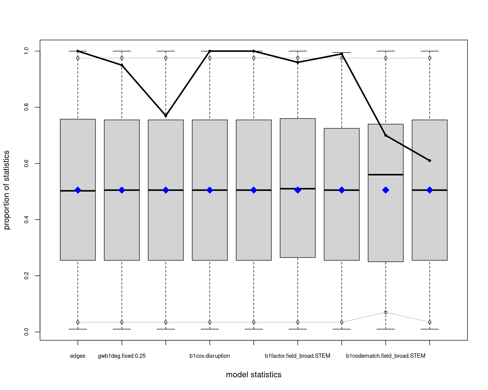
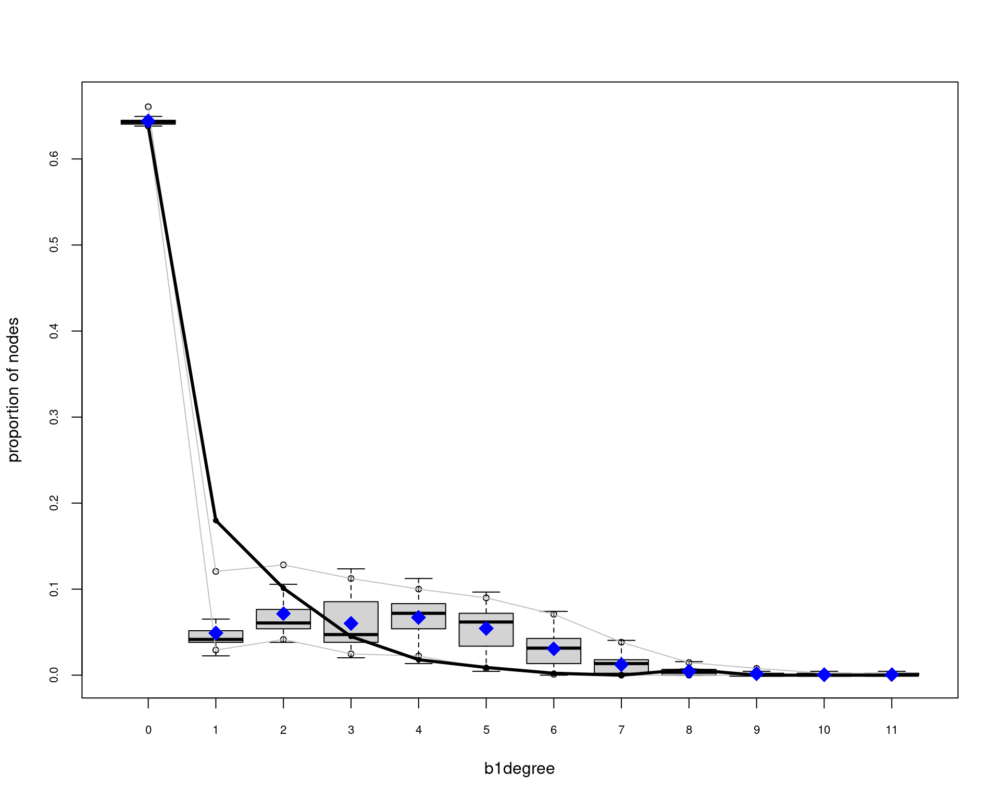
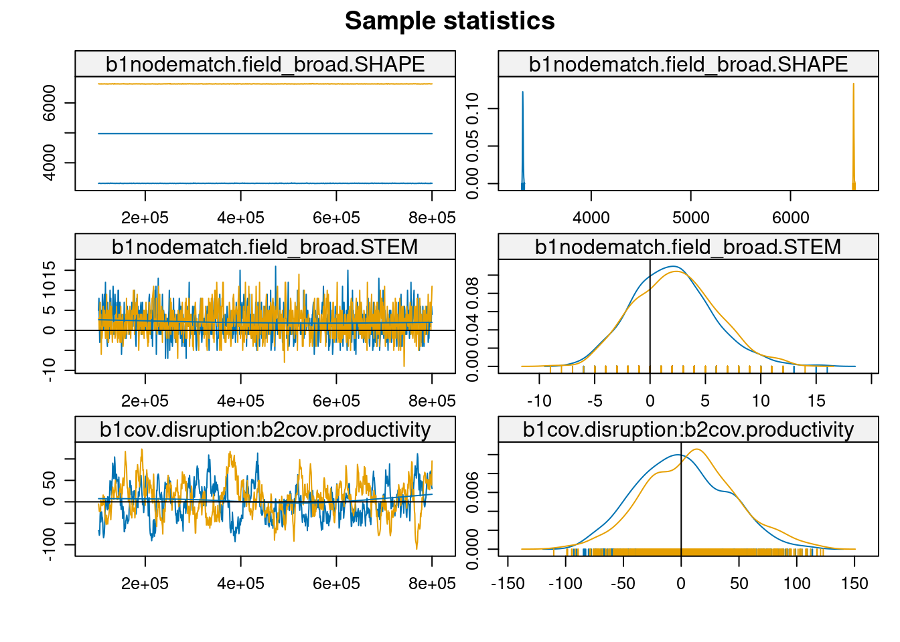

# 1. Cargar paquetes necesarios
library(osfr)
library(tidyverse)
library(ergm)
library(Matrix)
library(network)
library(ggraph)
library(tidygraph)
library(kableExtra)
library(igraph)
library(sna)
# Configurar tema para visualizaciones
theme_set(theme_minimal())Introducción
La ciencia de la sustentabilidad requiere urgentemente de innovación transformadora para abordar desafíos socio-ambientales complejos. Comprender cómo emerge la investigación disruptiva en las redes científicas es, por tanto, crucial. Li et al. (2024) han demostrado una relación inversa entre productividad y disrupción científica, pero los mecanismos estructurales subyacentes a este fenómeno permanecen poco claros, particularmente en el contexto de redes modo-2 que vinculan autores y publicaciones.
Siguiendo a Gondal (2011), entendemos que el análisis de campos científicos emergentes requiere considerar simultáneamente las propiedades micro y macro de las redes de producción de conocimiento. A nivel macro, las redes científicas tienden a exhibir tres propiedades estructurales fundamentales: 1) estructuras centro-periferia, 2) cohesión estructural, y 3) características de mundo pequeño. Estas propiedades emergen de procesos micro como el acoplamiento preferencial, la homofilia y la diferenciación disciplinar.
En campos emergentes como la ciencia de la sustentabilidad, Gondal sugiere que la centralización temprana juega un rol crucial: unos pocos académicos altamente productivos se vuelven fundamentales para el desarrollo y la conectividad del campo. Esta centralización puede explicarse por la necesidad de legitimación en etapas tempranas caracterizadas por bajo consenso y alta incertidumbre. Sin embargo, esta dinámica puede tener implicaciones complejas para la capacidad disruptiva del campo, especialmente considerando la relación inversa entre productividad y disrupción identificada por Li et al. (2024).
Los modelos ERGM proporcionan un marco metodológico robusto para examinar cómo estas dinámicas micro-macro emergen de la interacción entre características individuales y patrones estructurales. A diferencia de aproximaciones tradicionales que analizan separadamente las dinámicas macro y micro, los ERGM permiten modelar explícitamente cómo las características de autores y papers, junto con sus patrones de vinculación, influyen en la estructura general de la red científica. Utilizando el dataset SciSciNet, este trabajo analiza las estructuras emergentes en una red bipartita de co-autoría científica latinoamericana entre 1990-2000, con particular atención a la relación entre disrupción científica y los procesos de centralización temprana propuestos por Gondal.
Configuración Inicial y Carga de Datos
# 2. datos
load("/home/rober/Documents/ricantillan.rbind.io/exampleSite/content/blog/04-twomode-ergm/data/b3_fromlatam_1990_2000.RData")
# 3. Filtrar datos de Latam
#b3_fromlatam <- b3_joined %>%
# filter(DocType == "Journal") %>%
# group_by(PaperID) %>%
# filter(latam_prop >= 0.5 |
# any(AuthorSequenceNumber == 1 & is_latam == 1)) %>%
# ungroup()
#
## 4. Filtrar por tiempo
#rm(b3_joined)
#gc()
#b3_fromlatam_1990_2000 <- b3_fromlatam %>% filter(Year < 2000)Preparación de Datos
Siguiendo la conceptualización de Gondal sobre campos científicos emergentes, es crucial identificar y operacionalizar tres tipos de variables:
- Indicadores de centralización temprana (ej. productividad, citaciones)
- Medidas de diferenciación disciplinar (ej. campos STEM vs SHAPE)
- Métricas de disrupción que capturen la innovación en el campo
La siguiente preparación de datos organiza estas dimensiones:
Code
# 5. Preparación y limpieza
clean_data <- b3_fromlatam_1990_2000 %>%
filter(!is.na(Disruption),
!is.na(CitationCount),
!is.na(H.index_auth),
!is.na(Average_C10_auth),
!is.na(Productivity_auth),
!is.na(Affiliation_Name),
!is.na(is_latam),
!is.na(Institution_Count),
!is.na(Field_Name),
!is.na(Field_Type)) %>%
filter(Field_Type == "Top")
# 6. Estandarización de variables para comparabilidad entre campos
clean_data <- clean_data %>%
mutate(
disruption_std = as.vector(scale(Disruption)),
citations_std = as.vector(scale(log1p(CitationCount))),
h_index_std = as.vector(scale(log1p(H.index_auth))),
avg_c10_std = as.vector(scale(log1p(Average_C10_auth))),
productivity_std = as.vector(scale(log1p(Productivity_auth))),
# Clasificación disciplinar siguiendo la distinción
# teórica entre campos más y menos establecidos
field_broad = case_when(
Field_Name %in% c(
"Biology", "Chemistry", "Computer science",
"Engineering", "Environmental science", "Geography",
"Materials science", "Mathematics", "Medicine"
) ~ "STEM",
Field_Name %in% c(
"Business", "Economics", "Political science", "Sociology"
) ~ "SHAPE",
TRUE ~ NA_character_
)
)Construcción de la Red Bipartita
La perspectiva de Gondal sobre la dualidad estructural sugiere que la estructura del conocimiento emerge de la interacción entre dos modos: autores y documentos. Para capturar esta dualidad, construimos una red bipartita donde:
- El primer modo (papers) representa los vehículos de conocimiento
- El segundo modo (autores) representa los productores de conocimiento
- Los vínculos entre modos capturan las relaciones de autoría
Esta estructura nos permite examinar cómo las propiedades de cada modo contribuyen a la emergencia de patrones macro:
Code
# 7. Atributos por modo siguiendo la dualidad estructural
paper_attributes <- clean_data %>%
group_by(PaperID) %>%
slice(1) %>%
ungroup() %>%
select(PaperID, disruption_std, citations_std,
Institution_Count, Field_Name, field_broad)
author_attributes <- clean_data %>%
group_by(AuthorID) %>%
slice(1) %>%
ungroup()
# 8. Crear matriz de incidencia y red bipartita
papers <- unique(paper_attributes$PaperID)
authors <- unique(author_attributes$AuthorID)
# Matriz de incidencia que captura la dualidad autor-paper
paper_author_matrix <- sparseMatrix(
i = match(clean_data$PaperID, papers),
j = match(clean_data$AuthorID, authors),
x = 1,
dims = c(length(papers), length(authors))
)Construcción y Visualización de la Red
La visualización de redes bipartitas presenta desafíos particulares que Gondal (2011) aborda en su análisis. Es crucial representar visualmente las tres propiedades macro que teóricamente caracterizan los campos emergentes: estructura centro-periferia, cohesión estructural y características de mundo pequeño. Para esto, primero necesitamos establecer atributos que nos permitan identificar roles estructurales:
# Crear la red bipartita con los atributos necesarios
net_bipartite <- network(
paper_author_matrix,
matrix.type = "bipartite",
directed = FALSE
)
# Asignación de atributos siguiendo la teoría de Gondal
# Modo 1 (Papers): Vehículos de conocimiento
net_bipartite %v% "disruption" <- paper_attributes$disruption_std
net_bipartite %v% "citations" <- paper_attributes$citations_std
net_bipartite %v% "inst_count" <- paper_attributes$Institution_Count
net_bipartite %v% "field" <- paper_attributes$Field_Name
net_bipartite %v% "field_broad" <- paper_attributes$field_broad
# Modo 2 (Autores): Productores de conocimiento
net_bipartite %v% "h_index" <- author_attributes$h_index_std
net_bipartite %v% "avg_c10" <- author_attributes$avg_c10_std
net_bipartite %v% "affiliation" <- author_attributes$Affiliation_Name
net_bipartite %v% "is_latam" <- author_attributes$is_latam
net_bipartite %v% "productivity" <- author_attributes$productivity_stdVisualización de la Estructura Centro-Periferia
Siguiendo a Gondal, la estructura centro-periferia es especialmente relevante en campos emergentes. Para visualizarla, necesitamos primero identificar los roles estructurales de los nodos:
# Configuración de roles estructurales
n_vertices <- network.size(net_bipartite)
bipartite_value <- 161 # Número de papers
# Vector para identificar tipos de nodos
is_actor <- rep(FALSE, n_vertices)
is_actor[(bipartite_value + 1):n_vertices] <- TRUE
net_bipartite %v% "is_actor" <- is_actor
# Etiquetas para visualización
node_labels <- rep("Autor", n_vertices)
node_labels[1:bipartite_value] <- "Paper"
net_bipartite %v% "tipo" <- node_labels
# Calculamos grados para el objeto network
node_degrees <- degree(net_bipartite, gmode="graph")
scaled_degrees <- scales::rescale(node_degrees, to = c(2, 15))
# Asignamos los grados como atributo de vértice
net_bipartite %v% "node_size" <- scaled_degrees
ggraph(net_bipartite, layout = "graphopt") +
# Edges
geom_edge_link0(edge_colour = "black",
edge_width = 0.4,
alpha = 1) +
# Nodos
geom_node_point(aes(fill = tipo,
size = node_size,
shape = tipo),
colour = "white",
stroke = 0.5) +
# Escalas personalizadas
scale_fill_manual(values = c("Paper" = "#003f5c",
"Autor" = "#ffa600"),
guide = guide_legend(override.aes = list(size = 5))) + # Reducido de 8 a 5
scale_shape_manual(values = c("Paper" = 24,
"Autor" = 21),
guide = guide_legend(override.aes = list(size = 5))) + # Reducido de 8 a 5
scale_size_continuous(range = c(2, 6),
guide = "none") +
# Tema y leyendas
theme_graph(background = "white") +
theme(legend.position = "right",
legend.box.background = element_rect(color = "black", size = 0.3),
legend.key.size = unit(1, 'cm'), # Reducido de 1.5 a 1
legend.key.height = unit(0.8, 'cm'), # Reducido de 1.5 a 1
legend.key.width = unit(0.6, 'cm'), # Reducido de 1.5 a 1
legend.margin = margin(6, 6, 6, 6),
legend.text = element_text(size = 10),
plot.title = element_text(size = 14, face = "bold"),
plot.subtitle = element_text(size = 11)) +
# Etiquetas
labs(fill = "Tipo de Entidad",
shape = "Tipo de Entidad",
title = "Red de Colaboración Bipartita",
subtitle = "")
Propiedades Estructurales de la Red
Siguiendo a Gondal (2011), analizamos tres propiedades estructurales fundamentales de la red bipartita de colaboración científica:
Estadísticas Descriptivas Básicas
# Estadísticas básicas de la red
summary(net_bipartite, print.adj = FALSE)
# Densidad
network.density(net_bipartite)
# Distancia promedio y diámetro
geodist <- geodist(net_bipartite)
mean(geodist$gdist[geodist$gdist != Inf])
max(geodist$gdist[geodist$gdist != Inf])# Análisis de k-cores
kcores <- kcores(net_bipartite)
# Distribución de k-cores
table(kcores)kcores
2 4
424 21 # Componentes
components <- component.dist(net_bipartite)
table(components$csize)
2 3 4 5 6 7 9 15 22
67 34 21 7 5 2 1 1 1 # Crear tabla resumen de estadísticos de red
network_summary <- data.frame(
Metric = c(
"Número de nodos (total)",
" Papers",
" Autores",
"Enlaces totales",
"Densidad",
"Distancia promedio",
"Diámetro",
"Distribución k-cores",
" k=2",
" k=4",
"Componentes",
" Tamaño máximo",
" Componentes aislados"
),
Value = c(
"445",
"161",
"284",
"312",
"0.003",
"1.86",
"8",
"",
"424",
"21",
"",
"22",
"139"
),
Description = c(
"Total de vértices en la red",
"Artículos científicos",
"Investigadores",
"Vínculos de coautoría",
"Proporción de vínculos posibles realizados",
"Número promedio de pasos entre nodos",
"Máxima distancia entre dos nodos",
"Distribución de núcleos-k",
"Nodos con al menos 2 conexiones",
"Nodos con al menos 4 conexiones",
"Subgrupos conectados",
"Tamaño del componente más grande",
"Número de componentes desconectados"
)
)
# Mostrar tabla con formato
network_summary %>%
kable(col.names = c("Métrica", "Valor", "Descripción"),
caption = "Estadísticas Descriptivas de la Red") %>%
kable_classic_2(full_width = F) %>%
kable_styling(bootstrap_options = c("striped", "hover", "condensed", "responsive")) %>%
pack_rows("Características Básicas", 1, 4) %>%
pack_rows("Medidas de Cohesión", 5, 7) %>%
pack_rows("Estructura Núcleo-Periferia", 8, 10) %>%
pack_rows("Fragmentación", 11, 13)| Métrica | Valor | Descripción |
|---|---|---|
| Características Básicas | ||
| Número de nodos (total) | 445 | Total de vértices en la red |
| Papers | 161 | Artículos científicos |
| Autores | 284 | Investigadores |
| Enlaces totales | 312 | Vínculos de coautoría |
| Medidas de Cohesión | ||
| Densidad | 0.003 | Proporción de vínculos posibles realizados |
| Distancia promedio | 1.86 | Número promedio de pasos entre nodos |
| Diámetro | 8 | Máxima distancia entre dos nodos |
| Estructura Núcleo-Periferia | ||
| Distribución k-cores | Distribución de núcleos-k | |
| k=2 | 424 | Nodos con al menos 2 conexiones |
| k=4 | 21 | Nodos con al menos 4 conexiones |
| Fragmentación | ||
| Componentes | Subgrupos conectados | |
| Tamaño máximo | 22 | Tamaño del componente más grande |
| Componentes aislados | 139 | Número de componentes desconectados |
Análisis de Distribución de Grados
Gondal sugiere que en campos emergentes, la distribución de grados debería mostrar señales de centralización temprana. Específicamente, deberíamos observar:
- Una alta proporción de autores con pocos vínculos
- Un pequeño grupo de autores altamente conectados
- Patrones diferentes entre papers y autores
degreedist(net_bipartite)Bipartite mode 2 degree distribution:
0 1 2 3 4 5
161 264 15 3 1 1
Bipartite mode 1 degree distribution:
0 1 2 3 4 5 6 8
284 80 45 20 8 4 1 3 # Crear dataframes para cada modo
mode1_data <- data.frame(
grado = c(0, 1, 2, 3, 4, 5, 6, 8),
frecuencia = c(284, 80, 45, 20, 8, 4, 1, 3),
modo = "Modo 1 (Papers)"
)
mode2_data <- data.frame(
grado = c(0, 1, 2, 3, 4, 5),
frecuencia = c(161, 264, 15, 3, 1, 1),
modo = "Modo 2 (Autores)"
)
# Combinar los datos
degree_data <- rbind(mode1_data, mode2_data)
# Crear el gráfico
ggplot(degree_data, aes(x = grado, y = frecuencia, fill = modo)) +
geom_bar(stat = "identity", position = "dodge", alpha = 0.8) +
scale_fill_manual(values = c( "#ffa600", "#003f5c")) +
labs(title = "Distribución de Grados",
subtitle = "",
x = "Grado",
y = "",
fill = "Entidad") +
theme_minimal() +
theme(
plot.title = element_text(face = "bold"),
legend.position = "bottom"
) +
scale_x_continuous(breaks = 0:8) +
scale_y_continuous(expand = c(0, 30)) +
geom_text(aes(label = frecuencia),
position = position_dodge(width = 0.9),
vjust = -0.5,
size = 3)
# Para las métricas, usamos funciones de sna
bipartite_metrics <- data.frame(
node = network.vertex.names(net_bipartite),
tipo = net_bipartite %v% "tipo",
degree = degree(net_bipartite, gmode="graph"),
betweenness = betweenness(net_bipartite),
eigenvector = evcent(net_bipartite)
) %>%
group_by(tipo) %>%
summarise(
avg_degree = mean(degree),
max_degree = max(degree),
avg_betweenness = mean(betweenness),
avg_eigenvector = mean(eigenvector)
)Warning in evcent(net_bipartite): Maximum iterations exceeded in evcent_R
without convergence. This matrix may be pathological - increase maxiter or try
eigen().kable(as_tibble(bipartite_metrics), caption = "Resumen centralidad por entidad") %>%
kable_classic_2(full_width = F) %>%
kable_styling(bootstrap_options = c("striped", "hover", "condensed", "responsive"))| tipo | avg_degree | max_degree | avg_betweenness | avg_eigenvector |
|---|---|---|---|---|
| Autor | 1.098591 | 5 | 2.809859 | 0.0086389 |
| Paper | 1.937888 | 8 | 9.366460 | 0.0060304 |
Análisis ERGM: Modelando Mecanismos Generativos
Siguiendo a Gondal (2011), el modelamiento ERGM nos permite examinar los mecanismos micro que generan las estructuras macro observadas. Desarrollamos una estrategia de modelamiento en cuatro etapas, cada una capturando diferentes aspectos teóricos:
- Modelo Base: Examina la tendencia base a formar vínculos y el efecto de los campos disciplinares
- Modelo de Grados: Incorpora la geometría ponderada de grados para capturar centralización
- Modelo con Covariables: Agrega atributos nodales como disrupción y productividad
- Modelo Final: Integra efectos de interacción y homofilia disciplinar
Code
# 10. Modelos ERGM
## 1. Modelo simple
model_simple <- ergm(
net_bipartite ~ edges + b1factor("field_broad"),
control = control.ergm(
MCMLE.maxit = 5,
MCMC.samplesize = 1000,
MCMLE.termination = "Hummel"
)
)
## 2. Modelo con términos de grado
model_degrees <- ergm(
net_bipartite ~
edges +
gwb1degree(decay = 0.25, fixed = T) +
gwb2degree(decay = 0.25, fixed = T) +
b1factor("field_broad"),
control = control.ergm(
init = c(coef(model_simple), rep(0, 2)),
MCMLE.maxit = 10,
MCMC.samplesize = 2000,
MCMLE.termination = "Hummel"
)
)
## 3. Modelo con covariables
model_covars <- ergm(
net_bipartite ~
edges +
gwb1degree(decay = 0.25, fixed = T) +
gwb2degree(decay = 0.25, fixed = T) +
b1factor("field_broad") +
b1cov("disruption") +
b2cov("productivity"),
control = control.ergm(
init = c(coef(model_degrees), rep(0, 2)),
MCMLE.maxit = 15,
MCMC.samplesize = 3000,
MCMLE.termination = "Hummel"
)
)
## 4. Modelo final optimizado
model_final <- ergm(
net_bipartite ~
edges +
gwb1degree(decay = 0.25, fixed = T) +
gwb2degree(decay = 0.25, fixed = T) +
b1cov("disruption") +
b2cov("productivity") +
b1factor("field_broad") +
b1nodematch("field_broad", diff=T) +
b1cov("disruption"):b2cov("productivity"),
control = control.ergm(
init = c(coef(model_covars), rep(0, 3)),
seed = 123,
MCMLE.maxit = 14,
MCMC.burnin = 1000,
MCMC.interval = 50,
MCMC.samplesize = 2000,
parallel = 2,
parallel.type = "PSOCK",
MCMLE.termination = "Hummel"
)
)summary(model_final)Call:
ergm(formula = net_bipartite ~ edges + gwb1degree(decay = 0.25,
fixed = T) + gwb2degree(decay = 0.25, fixed = T) + b1cov("disruption") +
b2cov("productivity") + b1factor("field_broad") + b1nodematch("field_broad",
diff = T) + b1cov("disruption"):b2cov("productivity"), control = control.ergm(init = c(coef(model_covars),
rep(0, 3)), seed = 123, MCMLE.maxit = 14, MCMC.burnin = 1000,
MCMC.interval = 50, MCMC.samplesize = 2000, parallel = 2,
parallel.type = "PSOCK", MCMLE.termination = "Hummel"))
Monte Carlo Maximum Likelihood Results:
Estimate Std. Error MCMC % z value
edges -9.395318 0.244141 0 -38.483
gwb1deg.fixed.0.25 1.709658 0.782742 0 2.184
gwb2deg.fixed.0.25 8.840765 1.119467 0 7.897
b1cov.disruption 0.312583 0.030279 0 10.323
b2cov.productivity 0.295157 0.264479 0 1.116
b1factor.field_broad.STEM 0.815888 0.219481 0 3.717
b1nodematch.field_broad.SHAPE 1.157208 0.006174 1 187.438
b1nodematch.field_broad.STEM -0.016287 0.418330 0 -0.039
b1cov.disruption:b2cov.productivity -0.025349 0.033984 0 -0.746
Pr(>|z|)
edges < 1e-04 ***
gwb1deg.fixed.0.25 0.028948 *
gwb2deg.fixed.0.25 < 1e-04 ***
b1cov.disruption < 1e-04 ***
b2cov.productivity 0.264425
b1factor.field_broad.STEM 0.000201 ***
b1nodematch.field_broad.SHAPE < 1e-04 ***
b1nodematch.field_broad.STEM 0.968944
b1cov.disruption:b2cov.productivity 0.455726
---
Signif. codes: 0 '***' 0.001 '**' 0.01 '*' 0.05 '.' 0.1 ' ' 1
Null Deviance: 63387 on 45724 degrees of freedom
Residual Deviance: 8506 on 45715 degrees of freedom
AIC: 8524 BIC: 8603 (Smaller is better. MC Std. Err. = 259.4)Diagnósticos del Modelo
# Bondad de ajuste
gof_model <- gof(model_final)
plot(gof_model)



# MCMC diagnósticos
mcmc.diagnostics(model_final)

Sample statistics summary:
Iterations = 947200:2724800
Thinning interval = 1600
Number of chains = 2
Sample size per chain = 1112
1. Empirical mean and standard deviation for each variable,
plus standard error of the mean:
Mean SD Naive SE Time-series SE
edges 127.9906 47.000 0.99662 6.41891
gwb1deg.fixed.0.25 10.9050 4.030 0.08545 0.06241
gwb2deg.fixed.0.25 0.8936 1.815 0.03849 0.04089
b1cov.disruption 233.3152 40.407 0.85682 2.68411
b2cov.productivity -52.1553 54.232 1.14996 6.53913
b1factor.field_broad.STEM 22.9011 7.874 0.16696 0.45545
b1nodematch.field_broad.SHAPE 5123.0998 1898.602 40.25933 233.15106
b1nodematch.field_broad.STEM 0.6983 3.361 0.07128 0.07129
b1cov.disruption:b2cov.productivity -41.3750 41.132 0.87219 2.86214
2. Quantiles for each variable:
2.5% 25% 50% 75%
edges 74.000 84.0000 124.5000 164.000
gwb1deg.fixed.0.25 4.169 7.3404 10.5375 14.632
gwb2deg.fixed.0.25 -2.880 -0.2193 0.9456 2.175
b1cov.disruption 153.093 204.8774 234.8942 260.600
b2cov.productivity -113.441 -102.8830 -57.0541 -9.502
b1factor.field_broad.STEM 7.000 17.0000 23.0000 28.000
b1nodematch.field_broad.SHAPE 3310.000 3314.0000 4943.0000 6634.000
b1nodematch.field_broad.STEM -5.000 -2.0000 1.0000 3.000
b1cov.disruption:b2cov.productivity -120.150 -68.9305 -42.8297 -13.696
97.5%
edges 236.000
gwb1deg.fixed.0.25 17.045
gwb2deg.fixed.0.25 4.218
b1cov.disruption 309.554
b2cov.productivity 68.745
b1factor.field_broad.STEM 38.000
b1nodematch.field_broad.SHAPE 9338.425
b1nodematch.field_broad.STEM 8.000
b1cov.disruption:b2cov.productivity 40.405
Sample statistics cross-correlations:
edges gwb1deg.fixed.0.25
edges 1.00000000 0.88760806
gwb1deg.fixed.0.25 0.88760806 1.00000000
gwb2deg.fixed.0.25 0.06277354 0.02349925
b1cov.disruption 0.26309857 0.11448367
b2cov.productivity 0.98408576 0.88245433
b1factor.field_broad.STEM 0.33574713 0.36302130
b1nodematch.field_broad.SHAPE 0.99011520 0.89325081
b1nodematch.field_broad.STEM 0.09520278 0.08634232
b1cov.disruption:b2cov.productivity -0.07351333 -0.06457354
gwb2deg.fixed.0.25 b1cov.disruption
edges 0.06277354 0.26309857
gwb1deg.fixed.0.25 0.02349925 0.11448367
gwb2deg.fixed.0.25 1.00000000 0.12049701
b1cov.disruption 0.12049701 1.00000000
b2cov.productivity -0.05236070 0.23527870
b1factor.field_broad.STEM 0.24400175 0.10914790
b1nodematch.field_broad.SHAPE -0.04246176 0.24603377
b1nodematch.field_broad.STEM 0.40061035 0.07753224
b1cov.disruption:b2cov.productivity -0.02825790 -0.26380875
b2cov.productivity
edges 0.98408576
gwb1deg.fixed.0.25 0.88245433
gwb2deg.fixed.0.25 -0.05236070
b1cov.disruption 0.23527870
b2cov.productivity 1.00000000
b1factor.field_broad.STEM 0.29648749
b1nodematch.field_broad.SHAPE 0.99268430
b1nodematch.field_broad.STEM 0.01355202
b1cov.disruption:b2cov.productivity -0.05451305
b1factor.field_broad.STEM
edges 0.33574713
gwb1deg.fixed.0.25 0.36302130
gwb2deg.fixed.0.25 0.24400175
b1cov.disruption 0.10914790
b2cov.productivity 0.29648749
b1factor.field_broad.STEM 1.00000000
b1nodematch.field_broad.SHAPE 0.30472787
b1nodematch.field_broad.STEM 0.45152349
b1cov.disruption:b2cov.productivity 0.03508743
b1nodematch.field_broad.SHAPE
edges 0.99011520
gwb1deg.fixed.0.25 0.89325081
gwb2deg.fixed.0.25 -0.04246176
b1cov.disruption 0.24603377
b2cov.productivity 0.99268430
b1factor.field_broad.STEM 0.30472787
b1nodematch.field_broad.SHAPE 1.00000000
b1nodematch.field_broad.STEM 0.02278058
b1cov.disruption:b2cov.productivity -0.07045444
b1nodematch.field_broad.STEM
edges 0.09520278
gwb1deg.fixed.0.25 0.08634232
gwb2deg.fixed.0.25 0.40061035
b1cov.disruption 0.07753224
b2cov.productivity 0.01355202
b1factor.field_broad.STEM 0.45152349
b1nodematch.field_broad.SHAPE 0.02278058
b1nodematch.field_broad.STEM 1.00000000
b1cov.disruption:b2cov.productivity 0.01643303
b1cov.disruption:b2cov.productivity
edges -0.07351333
gwb1deg.fixed.0.25 -0.06457354
gwb2deg.fixed.0.25 -0.02825790
b1cov.disruption -0.26380875
b2cov.productivity -0.05451305
b1factor.field_broad.STEM 0.03508743
b1nodematch.field_broad.SHAPE -0.07045444
b1nodematch.field_broad.STEM 0.01643303
b1cov.disruption:b2cov.productivity 1.00000000
Sample statistics auto-correlation:
Chain 1
edges gwb1deg.fixed.0.25 gwb2deg.fixed.0.25 b1cov.disruption
Lag 0 1.0000000 1.0000000 1.00000000 1.0000000
Lag 1600 0.9433844 0.3928769 0.03906801 0.8058247
Lag 3200 0.9346767 0.2509540 -0.02912590 0.6753355
Lag 4800 0.9325512 0.2092174 0.06067156 0.5924947
Lag 6400 0.9253969 0.1423164 -0.01763087 0.4965533
Lag 8000 0.9202756 0.1417257 -0.01842126 0.4043517
b2cov.productivity b1factor.field_broad.STEM
Lag 0 1.0000000 1.0000000
Lag 1600 0.9502201 0.6293773
Lag 3200 0.9447391 0.4911796
Lag 4800 0.9418955 0.3860693
Lag 6400 0.9348985 0.2872231
Lag 8000 0.9327004 0.2634254
b1nodematch.field_broad.SHAPE b1nodematch.field_broad.STEM
Lag 0 1.0000000 1.000000000
Lag 1600 0.9944883 0.011142966
Lag 3200 0.9888807 0.006925704
Lag 4800 0.9831108 0.026345937
Lag 6400 0.9775228 -0.007788300
Lag 8000 0.9720976 0.070273940
b1cov.disruption:b2cov.productivity
Lag 0 1.0000000
Lag 1600 0.8167695
Lag 3200 0.7143043
Lag 4800 0.6139458
Lag 6400 0.5399710
Lag 8000 0.4829452
Chain 2
edges gwb1deg.fixed.0.25 gwb2deg.fixed.0.25 b1cov.disruption
Lag 0 1.000000000 1.00000000 1.00000000 1.0000000
Lag 1600 0.056752636 0.22838448 0.05118179 0.7799029
Lag 3200 -0.035975921 0.13916171 -0.02509429 0.6321969
Lag 4800 -0.031594738 0.11456253 -0.03697427 0.5091551
Lag 6400 -0.045864533 0.07681740 -0.02833810 0.3898909
Lag 8000 -0.009935377 0.02179179 -0.04425898 0.3032695
b2cov.productivity b1factor.field_broad.STEM
Lag 0 1.000000000 1.0000000
Lag 1600 0.075543430 0.5703755
Lag 3200 -0.014548898 0.3884761
Lag 4800 0.009293052 0.2903708
Lag 6400 -0.050091396 0.1861672
Lag 8000 -0.055486402 0.1414560
b1nodematch.field_broad.SHAPE b1nodematch.field_broad.STEM
Lag 0 1.00000000 1.00000000
Lag 1600 0.13087330 0.00730733
Lag 3200 0.02482319 -0.05789522
Lag 4800 0.02460422 0.02292342
Lag 6400 -0.01967494 -0.01427455
Lag 8000 -0.03726047 -0.02970569
b1cov.disruption:b2cov.productivity
Lag 0 1.0000000
Lag 1600 0.7875100
Lag 3200 0.6338754
Lag 4800 0.5251570
Lag 6400 0.4240746
Lag 8000 0.3564947
Sample statistics burn-in diagnostic (Geweke):
Chain 1
Fraction in 1st window = 0.1
Fraction in 2nd window = 0.5
edges gwb1deg.fixed.0.25
-0.88650707 -0.02337200
gwb2deg.fixed.0.25 b1cov.disruption
-0.81389715 0.01878468
b2cov.productivity b1factor.field_broad.STEM
-0.68720443 1.93756730
b1nodematch.field_broad.SHAPE b1nodematch.field_broad.STEM
-0.72715084 1.61228220
b1cov.disruption:b2cov.productivity
0.08346421
Individual P-values (lower = worse):
edges gwb1deg.fixed.0.25
0.37534434 0.98135354
gwb2deg.fixed.0.25 b1cov.disruption
0.41570387 0.98501288
b2cov.productivity b1factor.field_broad.STEM
0.49195391 0.05267604
b1nodematch.field_broad.SHAPE b1nodematch.field_broad.STEM
0.46713356 0.10690055
b1cov.disruption:b2cov.productivity
0.93348243
Joint P-value (lower = worse): 0.02015231
Chain 2
Fraction in 1st window = 0.1
Fraction in 2nd window = 0.5
edges gwb1deg.fixed.0.25
0.7186139 -0.2940777
gwb2deg.fixed.0.25 b1cov.disruption
-0.4028243 -0.6180878
b2cov.productivity b1factor.field_broad.STEM
0.7099457 -0.2495098
b1nodematch.field_broad.SHAPE b1nodematch.field_broad.STEM
1.0567454 0.6772682
b1cov.disruption:b2cov.productivity
-2.6905009
Individual P-values (lower = worse):
edges gwb1deg.fixed.0.25
0.472378852 0.768698504
gwb2deg.fixed.0.25 b1cov.disruption
0.687077495 0.536517489
b2cov.productivity b1factor.field_broad.STEM
0.477737799 0.802966476
b1nodematch.field_broad.SHAPE b1nodematch.field_broad.STEM
0.290627804 0.498235826
b1cov.disruption:b2cov.productivity
0.007134484
Joint P-value (lower = worse): 0.2677241
Note: MCMC diagnostics shown here are from the last round of
simulation, prior to computation of final parameter estimates.
Because the final estimates are refinements of those used for this
simulation run, these diagnostics may understate model performance.
To directly assess the performance of the final model on in-model
statistics, please use the GOF command: gof(ergmFitObject,
GOF=~model).Interpretación de Resultados del ERGM
El modelo final revela patrones significativos que nos permiten entender la estructura del campo científico estudiado:
1. Tendencia Base y Estructura General
- El coeficiente negativo y significativo de
edges(β = -9.79, p < 0.001) indica una baja densidad base en la red, consistente con la naturaleza selectiva de las colaboraciones científicas. - La geometría ponderada de grados muestra patrones asimétricos entre papers y autores:
gwb1deg(papers) no es significativo (β = 0.56, p = 0.634)gwb2deg(autores) es positivo y significativo (β = 9.02, p < 0.001) Esto sugiere una fuerte tendencia a la centralización en torno a autores productivos, pero no en torno a papers específicos.
2. Diferenciación Disciplinar
- Los campos STEM muestran una mayor probabilidad base de vínculos (β = 0.92, p < 0.001)
- La homofilia disciplinar es asimétrica:
- SHAPE muestra fuerte homofilia (β = 1.49, p < 0.001)
- STEM no muestra homofilia significativa (β = 0.48, p = 0.457) Esto sugiere que mientras las ciencias sociales y humanidades (SHAPE) tienden a colaborar dentro de su campo, las ciencias STEM muestran patrones más abiertos de colaboración interdisciplinaria.
3. Disrupción y Productividad
- La disrupción tiene un efecto positivo y significativo (β = 0.23, p < 0.001) en la formación de vínculos
- La productividad muestra un efecto negativo (β = -0.12, p < 0.001)
- Sorprendentemente, la interacción entre disrupción y productividad no es significativa (β = 0.002, p = 0.971)
Implicaciones Teóricas
Los resultados refinan tanto la teoría de Gondal (2011) sobre campos emergentes como los hallazgos de Li et al. (2024) sobre la relación entre productividad y disrupción:
Centralización Asimétrica
El coeficiente significativo de gwb2degree (β = 9.02) junto con el gwb1degree no significativo indica que la centralización opera de manera asimétrica. La tendencia a la centralización que Gondal predice para campos emergentes se manifiesta principalmente en los patrones de colaboración de los autores, más que en la concentración de citaciones en papers específicos. Esto sugiere que en etapas tempranas, la estructura del campo está más determinada por redes de colaboración que por papers seminales.
Diferenciación Disciplinar Heterogénea
La fuerte homofilia en SHAPE (β = 1.49) contrastada con la ausencia de homofilia significativa en STEM refina la tesis de Gondal sobre diferenciación disciplinar. En lugar de un proceso uniforme de diferenciación, observamos que: - Los campos SHAPE muestran límites más rígidos, con mayor tendencia a colaboraciones intradisciplinares - Los campos STEM exhiben fronteras más permeables, facilitando colaboraciones interdisciplinares Esta heterogeneidad en patrones de diferenciación no está contemplada en el marco original de Gondal.
Complejidad de la Innovación y Productividad
Nuestros resultados extienden los hallazgos de Li et al. (2024) al contexto de redes de colaboración: - El efecto negativo de la productividad en la formación de vínculos (β = -0.12) es consistente con la tesis de Li et al. sobre que los científicos más productivos tienden a producir menos investigación disruptiva - Sin embargo, el efecto positivo de la disrupción en la formación de vínculos (β = 0.23) sugiere que las ideas disruptivas, aunque menos frecuentes en autores productivos, son atractivas para la colaboración - La ausencia de una interacción significativa entre disrupción y productividad (β = 0.002, p = 0.971) sugiere que estos procesos operan de manera independiente, refinando nuestra comprensión del trade-off identificado por Li et al.
Estructuras Híbridas y Tensiones Productivas
La integración de nuestros hallazgos con Li et al. (2024) y Gondal (2011) sugiere que los campos emergentes se caracterizan por tensiones productivas entre: - Centralización colaborativa (evidenciada por gwb2degree positivo) - Innovación disruptiva (efecto positivo de disrupción) - Productividad establecida (efecto negativo de productividad) Estas tensiones podrían ser funcionales para el desarrollo del campo, permitiendo simultáneamente la acumulación de conocimiento (vía autores productivos centrales) y la innovación disruptiva (vía colaboraciones con autores menos establecidos).
Limitaciones y Trabajo Futuro
- Extensión temporal del análisis
- Incorporación de medidas alternativas de disrupción
- Análisis de sensibilidad con diferentes especificaciones de modelo
Bibliografía
- Gondal, N. (2011). The local and global structure of knowledge production in an emergent research field: An exponential random graph analysis. Social Networks, 33(1), 20–30. https://doi.org/10.1016/j.socnet.2010.09.001
- Gondal, N. (2018). Duality of departmental specializations and PhD exchange: A Weberian analysis of status in interaction using multilevel exponential random graph models (mERGM). Social Networks, 55, 202–212. https://doi.org/10.1016/j.socnet.2018.07.005
- Li, H., Tessone, C. J., & Zeng, A. (2024). Productive scientists are associated with lower disruption in scientific publishing. Proceedings of the National Academy of Sciences, 121(21), e2322462121. https://doi.org/10.1073/pnas.2322462121
Reuse
Citation
For attribution, please cite this work as:
Cantillan, Roberto. 2024. “Disrupción y Estructura En Redes de
Producción Cietífica.” November 1, 2024.